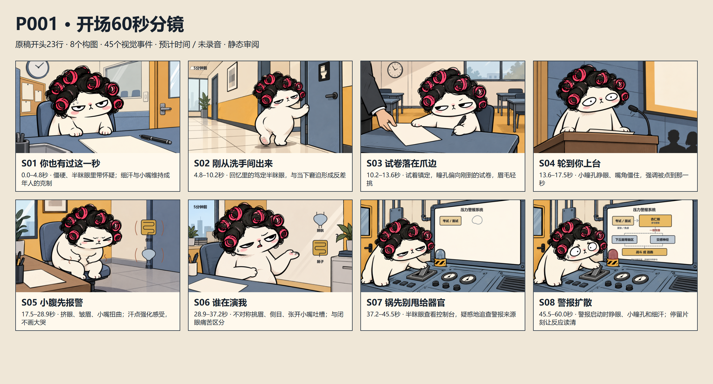

已确认的成人日常漫画风格：近黑墨线、奶油白猫、灰蓝空间和少量赭黄。下面按当前状态整理。
预计60秒 · 16段口播 · 8组分镜／45张状态图 · 待验收 · 未制作视频

16:9 · 2560×1440 · 约25秒 · 使用用户提供的旁白，含表情变化与扭胯出门
12秒 · 无声 · 无烧录字幕
透明动画可从项目重新导出；正式源 PNG 随仓库提供。
旧画风 2.0 · 无声 · 预计时间；当前新作品沿用上方 3.0 风格。